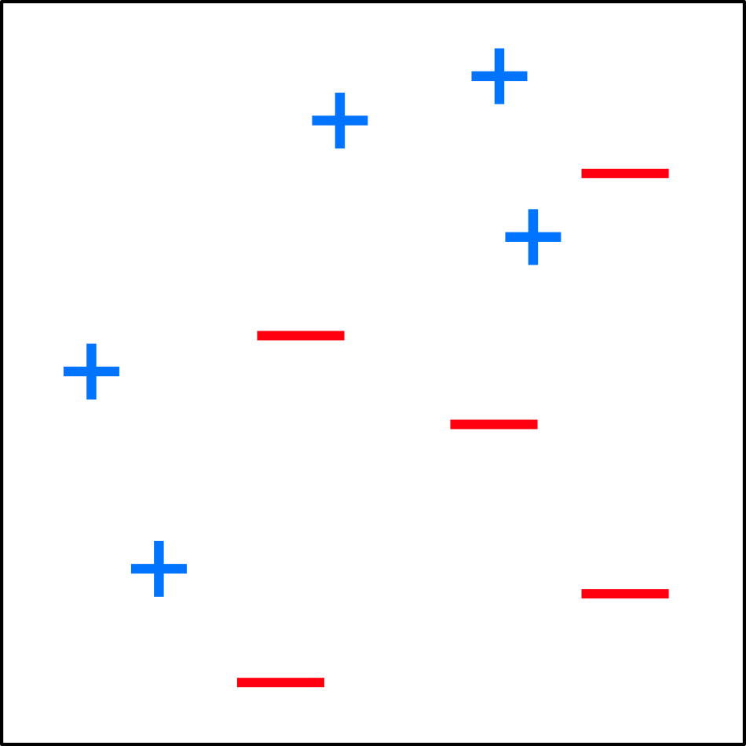
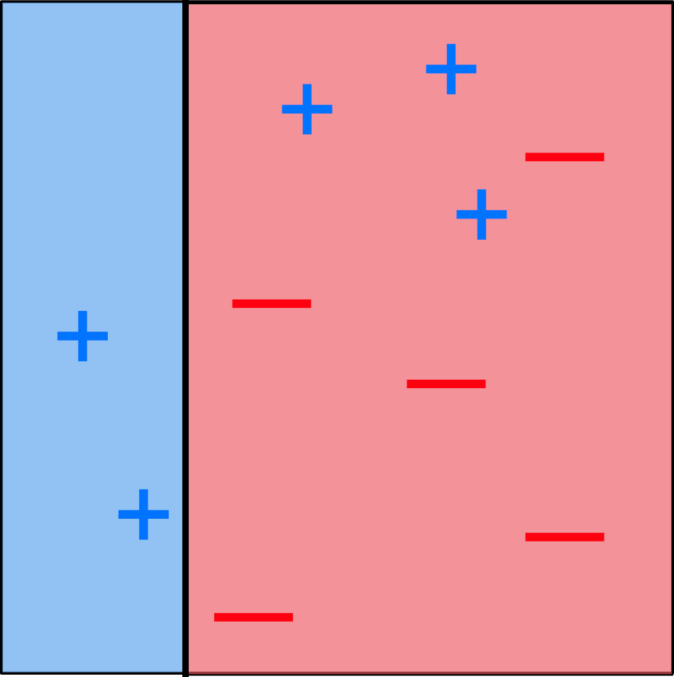
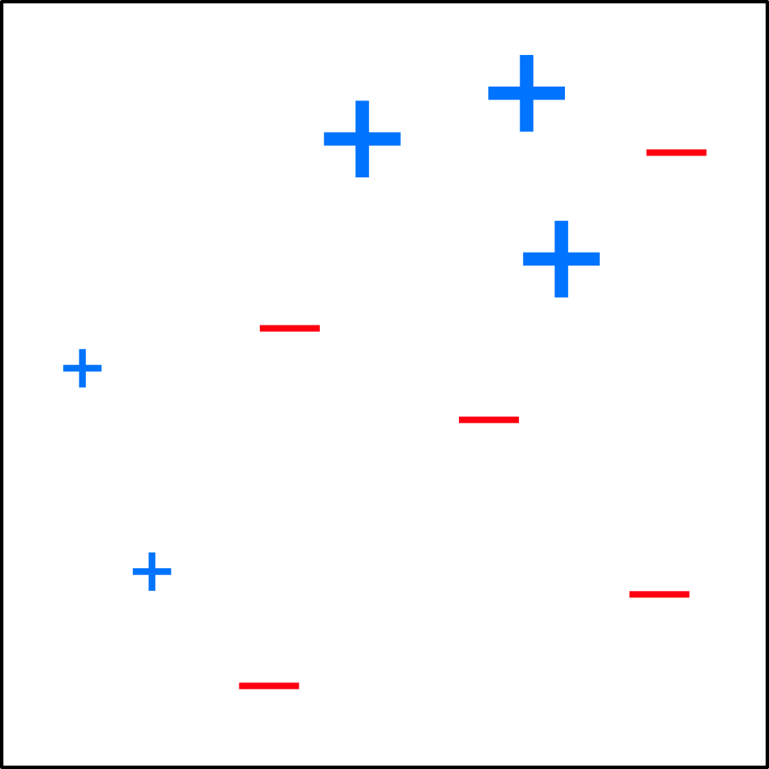
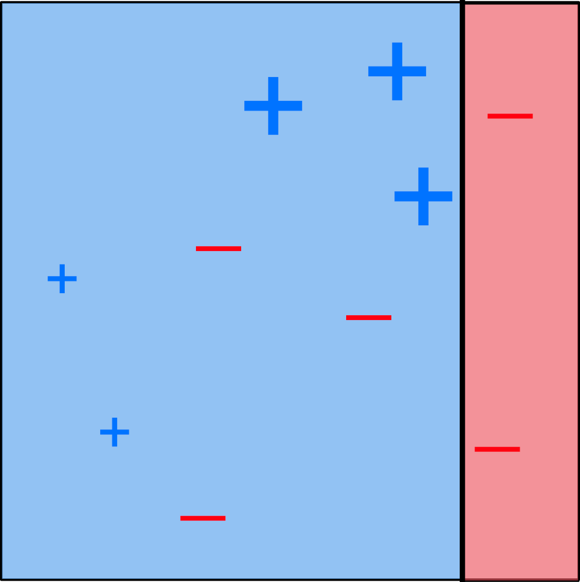
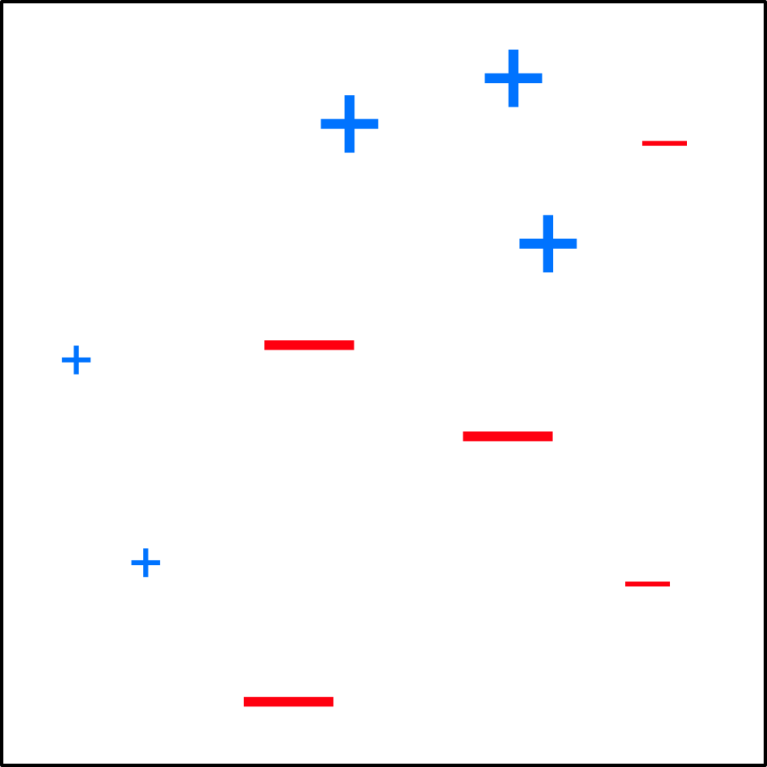
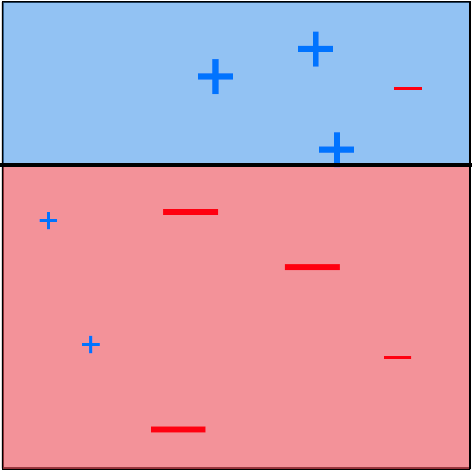
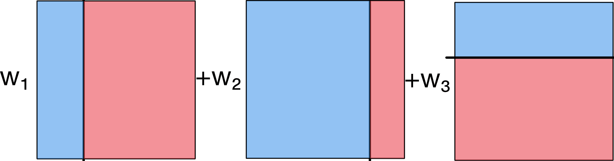
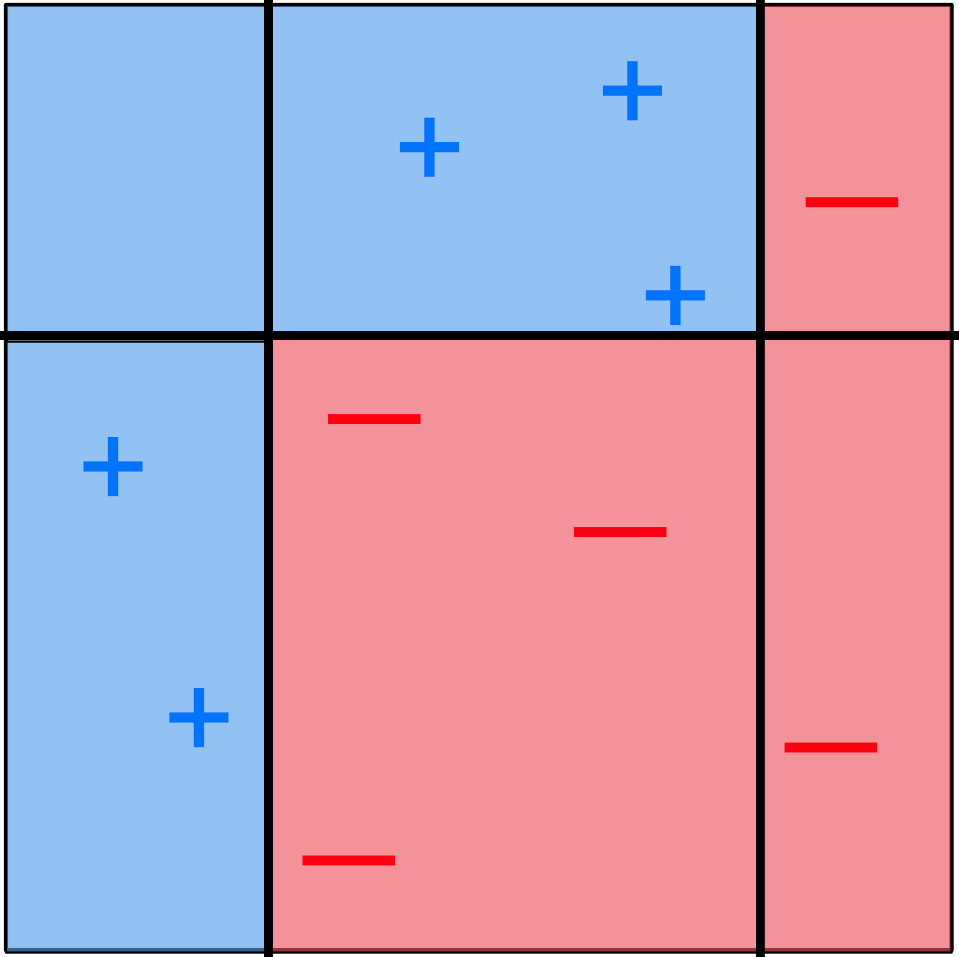

Supervisée
Méthodes ensemblistes
14 nov. 2025
Plan
Généralités
Bagging
Forêts aléatoires
Boosting
Principe
Combiner les prédictions de plusieurs modèles simples (classificateurs faibles, weak classifier) plutôt qu’un unique modèle complexe :
Meilleure performance globale
Plus grande robustesse au bruit
Réduction du sur-ajustement
Stabilité des prédictions améliorée
Stratégies de combinaison
Moyenne des probabilités prédites par chaque modèle
Vote de majorité : Classe la plus souvent prédite
Sélection de modèles : Analogie avec la sélection de variables
Méthodes automatisées : Bagging, boosting, forêts aléatoires
Illustration
Supposons que pour un exercice de classification binaire pour une observation, trois méthodes me donnent respectivement des probabilités \(0.3\), \(0.505\) et \(0.515\) que cette observation soit “positive” (et donc des probabilités \(0.7\), \(0.495\) et \(0.485\) que cette observation soit “négative”).
Moyenne des probabilités : \((0.3 + 0.505 + 0.515) / 3 = 0.44 < 0.5\), donc on prédit “négatif”.
Vote de majorité: deux méthodes prédisent “positif” et une prédit “négatif”, donc on prédit “positif”.
Remarque: on peut pondérer les moyennes ou les votes !
Bagging (Bootstrap Aggregating)
Construire plusieurs versions d’un même modèle sur des échantillons différents.
Algorithme :
Générer \(B\) échantillons bootstrap (tirage avec remise).
Obtenir \(B\) arbres de classification (ou autre).
Prédire par vote de majorité ou moyenne des probabilités.
Bootstrap
Le bootstrap est une technique basée sur l’échantillonage aléatoire, ce qui permet d’estimer la distribution (échantillonale) de (presque) toutes les statistiques.
Avantages et inconvénients
Réduction de la variance des prédictions
Augmentation de la stabilité des prédictions
Perte d’interprétabilité des variables individuelles
Un bagging d’un bon classificateur peut le rendre meilleur, un bagging d’un mauvais classificateur peut le rendre moins bon.
Évaluation de l’importance des variables
Sommer les réductions d’indice de Gini par variable.
Moyenner sur tous les arbres.
Exprimer en pourcentage relatif.
Exemple

Forêts aléatoires
Problème du bagging : Les arbres se ressemblent (dominance des classes fréquentes).
Solution : Introduction d’une source supplémentaire d’aléatoire.
À chaque division, sélectionner aléatoirement \(m\) variables parmi \(p\) disponibles.
Choix usuel: \(m \approx \sqrt{p}\).
Bénéfices de la randomisation
Décorrélation des arbres construits.
Diversification des modèles.
Amélioration de la performance globale.
Robustesse aux valeurs abérrantes accrue.
Meilleure généralisation que le bagging simple.
Algorithme
Générer \(B\) échantillons bootstrap (tirage avec remise).
Obtenir \(B\) arbres de classification construit sur \(m\) variables choisies aléatoirement parmi toutes les variables disponibles.
Prédire par vote de majorité ou moyenne des probabilités.
Exemple
Boosting
Construction séquentielle au lieu de parallèle → à l’opposé du bagging.
Construire une série de modèles simples.
Accorder progressivement plus d’importance aux erreurs.
Corriger les erreurs du modèle précédent.
Améliorer les prédictions.
Condition de succès
L’idée est d’utiliser des classifieurs faibles (weak learners).
Laisser au processus de boosting le soin de combiner optimalement les prédictions.
Quelques variantes
- AdaBoost (Adaptive Boosting)
Ajuste les poids des observations à chaque itération.
Méthode historique et bien établie.
- Gradient Boosting
Procédure itérative inspirée de la descente du gradient.
Très utilisé aujourd’hui.
Exemple (AdaBoost)

Exemple (AdaBoost)

Exemple (AdaBoost)

Exemple (AdaBoost)

Exemple (AdaBoost)

Exemple (AdaBoost)

Exemple (AdaBoost)

Exemple (AdaBoost)

Exemple
Paramètres par méthode
Atteindre un bon compromis entre performance et robustesse
Bagging → Nombre d’échantillons bootstrap \(B\).
Forêts aléatoires → Bagging + Nombre de variables \(m\) à considérer à chaque division
Boosting → Taille des arbres + Fraction du jeu de données échantillonné + Nombre d’itérations + Paramètres de régularisation
Méthode d’optimisation: Validation croisée
→ Nécessaire pour chaque paramètre afin d’éviter le sur-ajustement.
Définir une grille de valeurs pour chaque paramètre.
Évaluer par validation croisée.
Sélectionner la combinaison optimale.
Tester sur un jeu de données indépendant.
Conclusion
Ensemble > Individuel : Combinaison de modèles faibles.
Compromis : Performance vs Interprétabilité.
Optimisation des paramètres : Cruciale pour la performance finale.
Applications : Base de nombreux algorithmes modernes (XGBoost, LightGBM, etc.)
Prochaine étape → La classification non-supervisée (clustering)